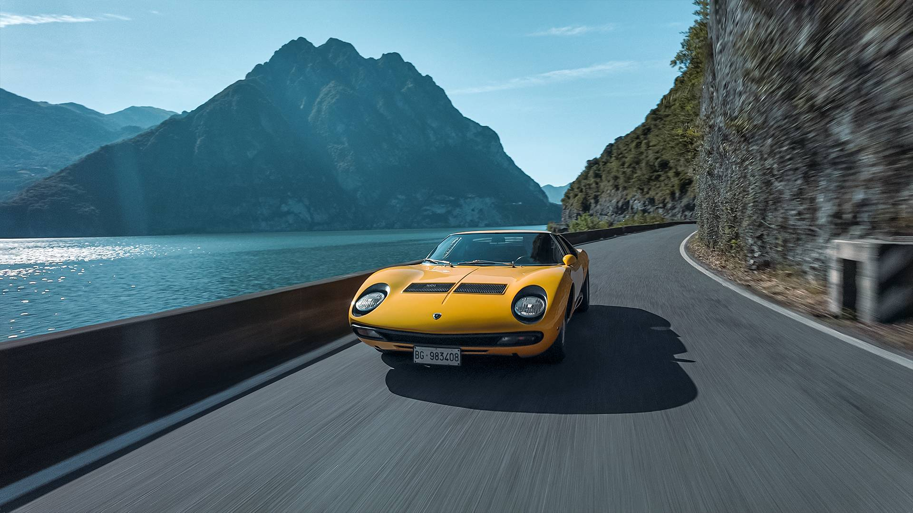

01
THE BEGINNING OF A LEGEND
MIURA
A REVOLUTION ON FOUR WHEELS
Presented in 1966, the Lamborghini Miura changed the world of high-performance sports cars. Its central V12 engine and revolutionary design established a new concept of the supercar.
02
ICONIC DESIGN
PURE
FORM
The Miura became famous for its low and aggressive silhouette. Every line was created to express speed, elegance and performance.
03
PERFORMANCE
V12
POWER
ENGINE
V12
DISPLACEMENT
3.9 L
POWER
385 CV
TOP SPEED
290 KM/H
THE LEGEND LIVES ON